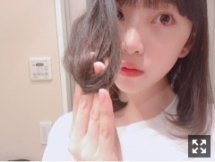
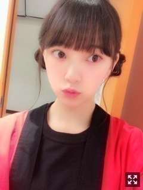

2018/0616Sat降りかかった雨に傘をさす
最近観た映画
ミスミソウ
レザーフェイス
恋は雨上がりのように
OVER DRIVE
どれも本当に良かった。。
全部、違う感情で胸が熱くなりました
日々勉強になることばかり
私も頑張らくては！
最近雨続きで、寒いですねー
風邪ひいてませんか？
わたしは喉があんまり本調子じゃありません...
ややハスキー
声帯が弱いみたい（´-`）.｡oO
皆さんも、体調には気をつけてください！
晴れの形は人それぞれでいい。

髪の毛アピールしようとしたら
持ち方が独特すぎた！笑

はっぴ 着て ハッピー
なんちって。
この口よくやってるらしい。
お母さんに、気の抜けた口してると変やでちゃんと意識しなさいって言われてからこれがクセになってる気がする。笑
クセってなかなか治らんよね〜
明日は仙台！
愛しの牛タンと、ファンの皆さんが
待ってますね！よーし
飛んでいきまーす(｀･ω･´)
待っとりんしゃい！
じゃね。
2018/06/16 21:00
コメント(306)
かわいい
未央奈ちゃんブログありがとね！
そして、モバメも泣くほど嬉しかったです。
喉、大丈夫ですか…？
明日仙台行くけん！
喋らなくてもいいからね！
待っとりんしゃい♡
おやすみおな♪
そして、モバメも泣くほど嬉しかったです。
喉、大丈夫ですか…？
明日仙台行くけん！
喋らなくてもいいからね！
待っとりんしゃい♡
おやすみおな♪
仙台少しひんやりしてるから羽織るものあった方がいいよ～
明日楽しんでね！
明日楽しんでね！
こんばんは。未央奈！
降りかかった雨に傘をさす。
今幸せですか？
って聞こうと思ったけど、はっぴ 着て ハッピーって言ってるし幸せなのかな。✨
映画観て吸収してるね！
最近こっちは
レディプレイヤー1
名探偵コナン
を観て先端技術的なもの。を学んだ！
日々成長！！☺︎
めちゃかわいい。。
そんなに見つめられると堀ちゃんに惚れちゃいます。
"堀ちゃんに惚れちゃう"
ちょっと好きな語呂。ん？( ˙-˙ )
はい。惚れてますよん♪
すごくわかる。
こっちも喉の調子が悪いんよねぇ。
ややハスキー。笑
あったかくして寝た方が良いよね。
（´-`）.｡oO
晴れの形は人それぞれでいい。
うん。そう思います。色んな考えがあるわけだから自分の思った"晴れ"があるよねっ！
わお、髪の毛アピール！笑
ほんと。独特だよ！笑う。
でも結構モデルっぽい雰囲気。
急に。はっぴ着たんか。笑
未央奈のなんちって。好き。
その口のクセは直さないでね！超かわいいから！！髪型もかわいい！
明日仙台か！
楽しく過ごしてください！！
いったれー飛んだれ〜〜。
待っとりんしゃい。笑
こっちはその次のビッグサイトの握手会を待ってますね〜♪
お互い傘を忘れたときは頼りにしましょうね〜！
じゃねっ！おやすみおな〜〜(^-^)
降りかかった雨に傘をさす。
今幸せですか？
って聞こうと思ったけど、はっぴ 着て ハッピーって言ってるし幸せなのかな。✨
映画観て吸収してるね！
最近こっちは
レディプレイヤー1
名探偵コナン
を観て先端技術的なもの。を学んだ！
日々成長！！☺︎
めちゃかわいい。。
そんなに見つめられると堀ちゃんに惚れちゃいます。
"堀ちゃんに惚れちゃう"
ちょっと好きな語呂。ん？( ˙-˙ )
はい。惚れてますよん♪
すごくわかる。
こっちも喉の調子が悪いんよねぇ。
ややハスキー。笑
あったかくして寝た方が良いよね。
（´-`）.｡oO
晴れの形は人それぞれでいい。
うん。そう思います。色んな考えがあるわけだから自分の思った"晴れ"があるよねっ！
わお、髪の毛アピール！笑
ほんと。独特だよ！笑う。
でも結構モデルっぽい雰囲気。
急に。はっぴ着たんか。笑
未央奈のなんちって。好き。
その口のクセは直さないでね！超かわいいから！！髪型もかわいい！
明日仙台か！
楽しく過ごしてください！！
いったれー飛んだれ〜〜。
待っとりんしゃい。笑
こっちはその次のビッグサイトの握手会を待ってますね〜♪
お互い傘を忘れたときは頼りにしましょうね〜！
じゃねっ！おやすみおな〜〜(^-^)
恋は雨上がりのように見ました～
良い作品でした
そのクセのお口僕は好きですよ
なので癖を直さないで欲しいです
仙台の握手会も頑張って下さい
いやいやいや、牛タンが先に来るやんけー！！脳内牛タン一色か！！！w
牛タン食べて頑張ってね！
牛タン良いね(*^^*)
喉お大事に～(^o^ゞ
喉お大事に～(^o^ゞ
いろんな映画観て、勉強して、ご活躍を期待しています。仙台頑張って来てください。
堀さん、おはようございます。
宮城県在住の堀さん推しの宮城のトーマスです。
体調は大丈夫ですか？
無理は禁物ですよ。
今日の宮城県の個別握手会の無事と成功を祈っています。
宮城県在住の堀さん推しの宮城のトーマスです。
体調は大丈夫ですか？
無理は禁物ですよ。
今日の宮城県の個別握手会の無事と成功を祈っています。
昨日友達と恋は雨上がりのように見に行ったよ！！
ちょー久しぶりの映画館、雰囲気に押されてポップコーンのエムサイズ買っちゃって食べきれないと思ってたら完食出来た笑
デッドプール2が気になるところ
ちょー久しぶりの映画館、雰囲気に押されてポップコーンのエムサイズ買っちゃって食べきれないと思ってたら完食出来た笑
デッドプール2が気になるところ
せこいぞ未央奈！！牛タン俺も食べたい笑笑
頑張って握手会！！
頑張って握手会！！
宮城個握楽しみです
みおなちゃん そうそう！
この口元ですよ 何か食べてる時もこの口元になる
大好きなんだ、この口元がね
可愛いし、何とも言えないみおなちゃん
この口元ですよ 何か食べてる時もこの口元になる
大好きなんだ、この口元がね
可愛いし、何とも言えないみおなちゃん
みおたんきゃわたん ♡
堀ちゃん
おはようございます
堀ちゃんがドラマとか映画に出ることになったら絶対に観るので、待ってますね（主演でも脇役でも必ずや）
今は少し寒いですが、今年の夏はエルニーニョ現象もラニーニャ現象も起こらならしいので、並の暑さの夏になるそうですよ（熱中症にも気をつけましょう）
はっぴの写真可愛いですね
5月に行った握手会の時も、言われてみればそんな口してました（少し口角が上がってる感じでした）
今日の握手会は自分行きませんが頑張って下さい
言われて見れば14日のレコメンの時も堀ちゃんの声が少し違った気がしたので、無理はしないように気をつけて下さい
ありがとうございました
おはようございます
堀ちゃんがドラマとか映画に出ることになったら絶対に観るので、待ってますね（主演でも脇役でも必ずや）
今は少し寒いですが、今年の夏はエルニーニョ現象もラニーニャ現象も起こらならしいので、並の暑さの夏になるそうですよ（熱中症にも気をつけましょう）
はっぴの写真可愛いですね
5月に行った握手会の時も、言われてみればそんな口してました（少し口角が上がってる感じでした）
今日の握手会は自分行きませんが頑張って下さい
言われて見れば14日のレコメンの時も堀ちゃんの声が少し違った気がしたので、無理はしないように気をつけて下さい
ありがとうございました
仙台寒いよー
普通に
久々に握手会で未央奈に会えるから楽しみやわ！！
今日もガンバロー
普通に
久々に握手会で未央奈に会えるから楽しみやわ！！
今日もガンバロー
更新ありがとー！
牛タンおいしいよね♡
髪の毛かわいい！
牛タンおいしいよね♡
髪の毛かわいい！
未央奈ちゃん更新ありがとー！
のど大丈夫？あまり無理はしないでね
早く治りますよーに。
自分も仙台で美味しいものたくさん食べたいなー(^_^)
のど大丈夫？あまり無理はしないでね
早く治りますよーに。
自分も仙台で美味しいものたくさん食べたいなー(^_^)
みおなおはよう❗おはようみおな❗今仙台に向かっておるけんね？待っとんしゃい⁉️
スズメちゃんヘアーだね！かわいい！
私もやってみようかな〜
名古屋ドーム当たらなくて、お姉ちゃんとしょんぼり中。
いつか行けますように！
私もやってみようかな〜
名古屋ドーム当たらなくて、お姉ちゃんとしょんぼり中。
いつか行けますように！
未央奈かわいい
牛タンいいゾ～それ！
ブログ更新ありがとう
恋は雨上がりのように、見たんだー！いいなぁー！
(´-ω-`)ｳﾗﾔﾏ～
私もみたいよぉー！アニメでは見てて、ハマってた(≧∇≦*)
私もなるはやで見る！！またねーヾ(*´∀｀*)ﾉ
恋は雨上がりのように、見たんだー！いいなぁー！
(´-ω-`)ｳﾗﾔﾏ～
私もみたいよぉー！アニメでは見てて、ハマってた(≧∇≦*)
私もなるはやで見る！！またねーヾ(*´∀｀*)ﾉ
未央奈、おはよう
今日は仙台で握手会だね。
未央奈に会いたいし、牛タンも食べたいから仙台に行くね。
あっ もちろん未央奈に会うのがメインで、牛タンはついでだよ(笑)
もちろん未央奈に会うのがメインで、牛タンはついでだよ(笑)
雨・・・個人的には雨音やカエルの大合唱が聴けるから雨は好きなんだよね。
それに、たまたまだと思うけど何故か雨の日に試験を受けると合格するし、その他良いことが多い。だから個人的には雨の日は好きだよ。
俺が最近観た映画は、
・恋は雨上がりのように
・IＴ
・シェイプ オブ ウォーター
・ダンケルク
・ハクソー リッジ
映画館で観るのが好きなんだけど、最近は上映期間中に映画館に行けなくて、レンタルが多くなったよ
上映予定の映画で未央奈が注目している映画があったら教えてね。
ゴロ～
今日は仙台で握手会だね。
未央奈に会いたいし、牛タンも食べたいから仙台に行くね。
あっ
雨・・・個人的には雨音やカエルの大合唱が聴けるから雨は好きなんだよね。
それに、たまたまだと思うけど何故か雨の日に試験を受けると合格するし、その他良いことが多い。だから個人的には雨の日は好きだよ。
俺が最近観た映画は、
・恋は雨上がりのように
・IＴ
・シェイプ オブ ウォーター
・ダンケルク
・ハクソー リッジ
映画館で観るのが好きなんだけど、最近は上映期間中に映画館に行けなくて、レンタルが多くなったよ
上映予定の映画で未央奈が注目している映画があったら教えてね。
ゴロ～
未央奈〜ブログ更新ありがとう！
そしておはよう〜
最近映画見てないなぁ…
見たくてたまらない！
”コードブルー”夏公開されるらしいから
はやく見たい!未央奈もよかったら見てみてね♪
今日の握手会も楽しんでね！
最近暑いのか寒いのかわからない（笑）
未央奈も体調気を付けてね
そしておはよう〜
最近映画見てないなぁ…
見たくてたまらない！
”コードブルー”夏公開されるらしいから
はやく見たい!未央奈もよかったら見てみてね♪
今日の握手会も楽しんでね！
最近暑いのか寒いのかわからない（笑）
未央奈も体調気を付けてね
みおなお疲れ様ー！
待っとりんしゃいって、
広島弁！？
広島に縁があるの？
待っとりんしゃいって、
広島弁！？
広島に縁があるの？
みおなかわいい〜大好き〜握手会待っててね！
質問コーナーは？笑
質問コーナーは？笑
ツインお団子かわいい！どうやってやってますか？
更新ありがとう！
はっぴ着てハッピー好きだよー！
口角が上がって良いと思う！ お母さんの言う事は当たる、僕も言われて恥をかいているからその辺り、複雑だよね(笑)
ツインやポニテあるかなー？ 期待(笑)
水分補給して頑張りましょう！
応援してます！
はっぴ着てハッピー好きだよー！
口角が上がって良いと思う！ お母さんの言う事は当たる、僕も言われて恥をかいているからその辺り、複雑だよね(笑)
ツインやポニテあるかなー？ 期待(笑)
水分補給して頑張りましょう！
応援してます！
画像保存できない〜
けど可愛い未央奈見れて嬉しい！！
いつもブログあげてくれてありがと！！
いつも応援してます！！
けど可愛い未央奈見れて嬉しい！！
いつもブログあげてくれてありがと！！
いつも応援してます！！
体調大丈夫ですか？
最近、ちょっと寒いので気をつけてください。
今日の個握行きます。
すごく楽しみです
最近、ちょっと寒いので気をつけてください。
今日の個握行きます。
すごく楽しみです
周りで体調崩している人も多くて…
そういう時期ですね、
その口、そのクセ何から何まで全部好きだ！
そういう時期ですね、
その口、そのクセ何から何まで全部好きだ！
初めてコメントします！
堀ちゃんほんとに大好きです❤️
私はまだ中学生で握手会やライブに行くのは高校生になってから出ないとダメなので、遠くから応援してます
体調に気をつけて頑張ってね 大好き
堀ちゃんほんとに大好きです❤️
私はまだ中学生で握手会やライブに行くのは高校生になってから出ないとダメなので、遠くから応援してます
体調に気をつけて頑張ってね 大好き
堀っぴー！！
ミスミソウめっちゃ面白いよね！！
自分も好きなんだ！
ちょっとグロい感じのやつとかめちゃくちゃ好きなの！
漫画でも映画でも少しグロのが好きだよ！
これを伝えたかった！！w
じゃあね！
ミスミソウめっちゃ面白いよね！！
自分も好きなんだ！
ちょっとグロい感じのやつとかめちゃくちゃ好きなの！
漫画でも映画でも少しグロのが好きだよ！
これを伝えたかった！！w
じゃあね！
ミスミソウ
恋は雨上がりのように
は、観ました
みおなさんの言うように、違った
感情で、熱くなりますね‼
体調気をつけてくださいね
恋は雨上がりのように
は、観ました
みおなさんの言うように、違った
感情で、熱くなりますね‼
体調気をつけてくださいね
風邪ひいてないです！
堀さんは喉大丈夫ですか？
たしかに、その口よく見ます！笑
ぼくも昔、口をタコチューにしちゃう癖があったんですけど周りから注意されてそれが嫌で頑張って直しました（笑）
堀さんは喉大丈夫ですか？
たしかに、その口よく見ます！笑
ぼくも昔、口をタコチューにしちゃう癖があったんですけど周りから注意されてそれが嫌で頑張って直しました（笑）
傘をさして歩いていると「傘って何でいつまでも同じような形でいいんだろう‥」と不思議に思います。完全に濡れるのを防いではくれない脆さのある存在にもかかわらず、基本デザインは変わらずにみんなに必要とされ続けている‥。（雨は人に許す心を与えてくれるものなのかな‥）ふと‥そんな気がしました。すいません変なコメントで。その口、鏡を見ながら懸命にまねようとしてみましたが、やはり僕にはできませんでした‥。 ではまた
未央奈おはよう！握手会楽しんでね牛タン食べたいなあ。
しあわーせーとーはー、ほしがふーるよるとまぶしいあさーがー、くりかえすような
その笑い口かわいい。
みおなちゃんのハッピー姿綺麗。赤も凄く似合ってるし。
今の季節って複雑だから、風邪には気をつけて下さいね。
今日の仙台は寒い見たいですね。でも、プリン会あるから大丈夫かな。じゃ、握手会頑張って下さいといっぱい楽しんでくださいね。
みおなちゃんのハッピー姿綺麗。赤も凄く似合ってるし。
今の季節って複雑だから、風邪には気をつけて下さいね。
今日の仙台は寒い見たいですね。でも、プリン会あるから大丈夫かな。じゃ、握手会頑張って下さいといっぱい楽しんでくださいね。
ミスミソウてやばww
未央奈ちゃんおはこんばちわ
はっぴ着てハッピー 今日寒いのは気のせいか な
仙台中の牛タン、はづきちゃんと全部食べ尽くしてきてください
未央奈ちゃんも風邪ひかないようにね
未央奈ちゃんに幸多かれ
はっぴ着てハッピー 今日寒いのは気のせいか な
仙台中の牛タン、はづきちゃんと全部食べ尽くしてきてください
未央奈ちゃんも風邪ひかないようにね
未央奈ちゃんに幸多かれ
みおなー、ブログ更新ありがとーー！
大切な人に降りかかった雨に
傘をさせる事だ
この歌詞が凄く好き！
ハッピ姿、めっちゃいいね！！！
今日も１日ファイトでーす！
ばいっっっ
大切な人に降りかかった雨に
傘をさせる事だ
この歌詞が凄く好き！
ハッピ姿、めっちゃいいね！！！
今日も１日ファイトでーす！
ばいっっっ
今日も気温が低いので、体調には気をつけてください！
牛タンを食べてるブログ待ってます（笑）
牛タンを食べてるブログ待ってます（笑）
みおなー、ブログ更新ありがとう！
みおなのはっぴ着てるときの髪型めっちゃ可愛いわ〜
みおなのはっぴ着てるときの髪型めっちゃ可愛いわ〜
瞬きかな？
はっぴ着てハッピーな未央奈ちゃんみてハッピッピー (´･ω･`)
ほりっぴ～、ナンチです♪
ほりっぴ～の思ってる通り単推しです
ぶれないねぇ～
ほりっぴ～の思ってる通り単推しです
ぶれないねぇ～


お疲れ様です
「私も頑張らなくては」が「私も頑張らくては」になっていますよ
未央奈ちゃん、沢山、映画を観ていますね☺️
自分も観に行こうかなぁ
喉のケアをしっかりして下さいね☺️
その口、よくしていますね
可愛いので問題なしです
握手会、頑張って下さいね